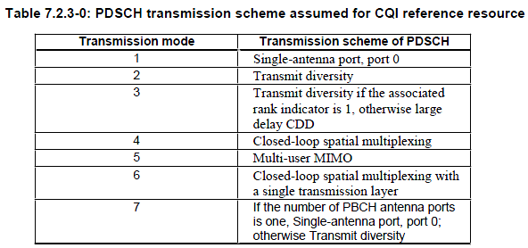
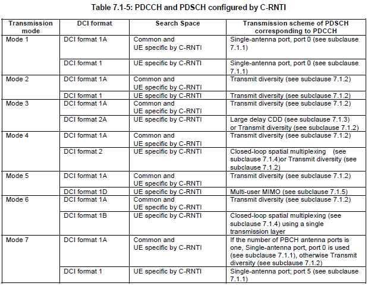
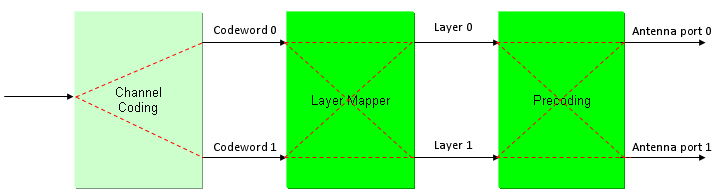

|
LTE Quick Reference Go Back To Index Home : www.sharetechnote.com |
||||||||||||||||||||||||||||||||||||||||||||||||||||||||||||||||||||||||||||
|
In LTE, usually they use multiple Antenna for downlink (at least from Category 3 UE and higher), meaning that eNode (Network) has use multiple Tx Antenna and UE use multiple Rx antenna. Now you almost automatically think about 'MIMO', but in reality 'multiple antenna' does not automatically mean 'MIMO'. For example, you have two downlink antenna. You can use these two antenna in various ways. Of course, one ways is to use it as 2 x 2 MIMO, but this is not the only way. You can use the two antenna in diversity configuration rather than MIMO configuration. Or you can just use only one of the antenna and sometimes you would like to use various different multiplexing, precoding methods etc.
In LTE, they give a special name for each of the way of transmission and it is called 'Transmission Mode'. For example, what we normally call 'SISO' (Single Transmission Antenna and Single Reciever Antenna) is called 'TM1(Transmission Mode 1)'. What we normally call 'Diversity' is called 'TM2'. What we call 'MIMO' but no feedback from UE is called 'TM3'. MIMO and UE feedback from UE (CQI, PMI, RI) is called 'TM4'.
A good summary of each Transmission Mode can be as following table from 36.213.

Considering these various possibilities, 3GPP provides several predefined transmission methods and this transmission method is called 'Transmission Mode'. For now, there are seven predefined predefined transmission mode as shown in the following table (TS 36.213)

To understand very details of each transmission mode requires almost complete knowledge of physical layer processing. Three important blocks in physical layer to determin the transmission mode can be illustrated as follows. You will find many different ways from the data input (left most arrow) through the final antenna ports (rightmost arrows). Each transmission mode determin which path the input data should follow through.

Some important parameter sets for each transmission mode are as follows. (To understad this process in detail, it is crucial to understand details of Precoding in basic procedure page).
Here goes some additional material to read from LteUniversity. You would get pretty good high level picture from them.
|